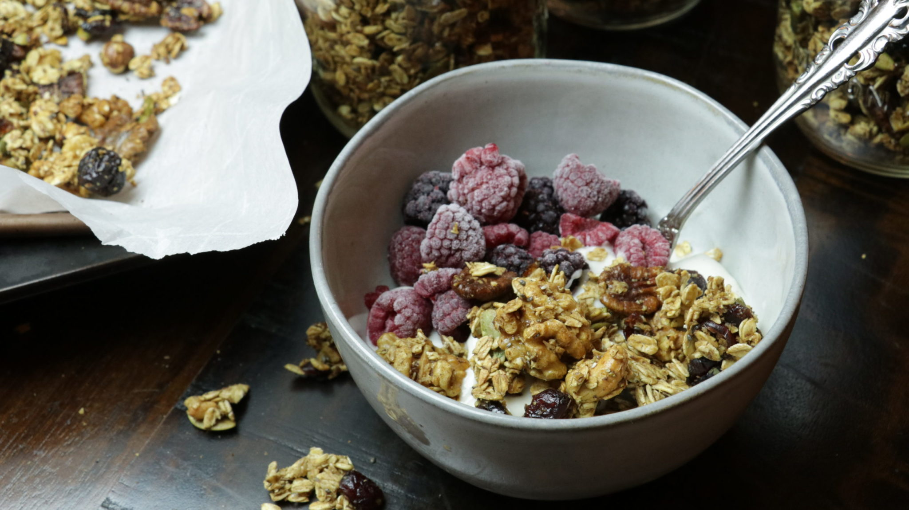

Bacteria-Boosting Granola

Store-bought granola usually has an overabundance of added sugar,
which is unfortunate because granola has great potential for supporting
microbiota health. This recipe keeps all the great dietary fiber but
eliminates much of the added sugar. To keep it interesting throughout
the year, we often add seasonal fruit when we eat the granola.
INGREDIENTS
- 4 cups mixed rolled cereal grain (or 1 cup each of flakes from oats, barley, rye, and quinoa; substitute as desired; Bob’s Red Mill brand has a five-grain rolled cereal that works well)
- 1 cup unsweetened dried flake coconut
- 1 cup chopped almonds
- ½ cup pepitas (pumpkin seeds)
- ½ cup pumpkin puree
- 3 tablespoons olive oil
- ½ cup water
- 2 tablespoons maple syrup
- 1 teaspoon ground cinnamon
- 1 teaspoon vanilla extract
- ½ cup raisins
INGREDIENTS
- Preheat the oven to 350˚F.
- In a large bowl, mix together the rolled cereal, coconut, almonds, and pepitas.
- In a small bowl, whisk together the pumpkin puree, olive oil, water, maple syrup, cinnamon, and vanilla.
- Pour the wet mixture over the cereal mixture and stir to coat.
- Spread the mixture onto a large baking sheet and bake for 40 minutes or until golden brown, stirring halfway through.
- Add the raisins to the cooked granola.
- When cooled, store the granola in a covered container in the refrigerator.
- Granola keeps well for at least a month.
- Serve about ¾ cup over yogurt or kefir with seasonal fresh or thawed frozen fruit.